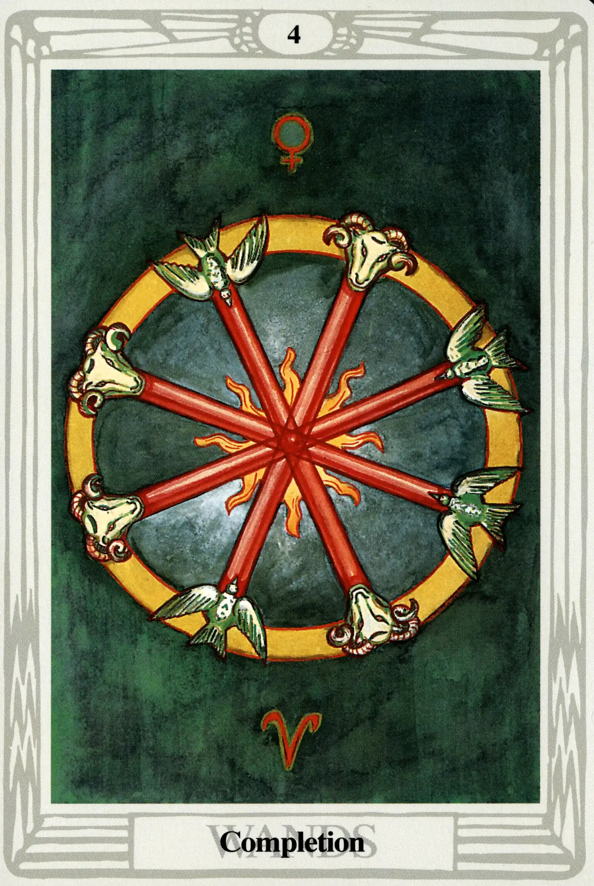

Wands
Four of Wands
Completion

(Venus in Aries)
20° to 30° Aries
April 11 to April 20
Original Title: The Lord of Perfected Work.
Golden Dawn Model: Two hands appear from clouds right and left of the card and clasp in the center with the grip of the First Order. They hold four wands or torches crossed. Flames appear where wands meet.
King Scale for Chesed: Deep Violet.
The Four Scales for Venus: Emerald Green; Sky Blue; Early Spring Green; Bright Rose or Cerise, rayed Pale Green.
The Four Scales for Aries: Scarlet; Red; Brilliant Flame; Glowing Red.
Formula: 4 (Chesed) of Wands (Atziluth) + Venus in Aries = COMPLETION
As we learned in our discussion of Atu X, Fortune, in the fourth sephira, Chesed, the gunas revolve. And so, even though it is a total departure from the Golden Dawn model, Harris creates a rotating wheel by transforming four wands into eight spokes of the wheel of Completion. Each wand is balanced and perfectly complemented with a dove of Venus and the ram of Mars-ruled Aries. Venus in Aries, Crowley points out, “indicates that one cannot establish one's work without tact and gentleness.” Harris ignores the deep violet of Chesed and focuses upon the greens and reds of this planet and sign.
Chesed is fourth sephira, but it is the first one below the Abyss. Consequently, the fours of the tarot represent the first solid manifestation of their suits. This is the classic characteristic of the Demiurge (Demiourgos)—a god who, as we learned in chapter 8, is, by all appearances, the first principal and creator of its universe, but who, in reality, is only the fourth principal and completely unaware of the three abstract principals (gods) that preceded it.
Zeus, Ammon, Jupiter, Jove, and Jehovah are classic examples of the Demiurge, who thinks he is god, but who is really only the visible manifestation of the invisible primal forces that created him. Nevertheless, the Demiurge brings order and the rule of law to the universe, a characteristic that is shared by all the small-card fours.